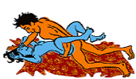

Edito de Oceane k.
Contacts utiles
Newsletter

Edition et Regie
Au capital de 5000000
CC 08114472Z-RC N° 200813-884
Depot legal : N° 8394 du 21 Juillet 2008
N° 31/D du 12 Septembre 2008

Les Dernières parutions

People Intime
-
Mon temoignage

Ça s'est passé l'an dernier. Mon petit frère (de neuf ans) a des problèmes psychologique (il faut croire que c'est de famille.. )Donc comme ma mère a pensé que ça lui ferait du bien de partir en vacances chez son grand frère qui habite à 10 km de chez nous, elle voulait qu'il ne soit pas seul et par conséquent que j'y aille avec lui. Je n'avais donc pas le choix et tout ce passait bien. Les deux premiers jours ! J'avais confiance cet homme (lorsque m'a mère a quittée mon père il nous abrité pendant plusieurs mois, je devais avoir à peu près six ans.) mais un matin, quand mon frère jouait dehors, il est entré dans la chambre et comme l'idiote que je suis, je lui ai confiée un secret que personne ne devait apprendre encore moins mes parents sinon serait une catastrophe(je sortait depuis deux ans avec un de mes profs de six ans mon aîné, il n'était que surveillant quand on a commencé a sortir ensemble et si quelqu'un l'apprenait il risquait la prison.) et mon oncle m'a dit qu'il garderait le secret si en échange je faisais quelque chose pour lui alors je lui ai demandée quoi et il m'a dit qu'il allait me montrer. Il a donc commençait à me toucher, je l'ai repoussé et je suis descendu en bas chercher mon portable dans le but d'appeler quelqu'un, n'importe qui. mais avant même que je le prenne dans mes mains mon oncle m'a menacé en m'expliquant que de toute façon ce que je refusait qu'il me fasse était déjà fait. Je comprenais pas ce qu'il voulait dire et là, il me dit qu'il m'a déjà touché dans le passé quand je n'avais que six ans ! (Or je faisais des cauchemars depuis mon plus jeune âge et je n'avais aucune idée de pourquoi, ma mère mettait ça sur le compte de la séparation d'avec mon père qui la battait. De plus, le frère de mon beau-père a également essayé de me violer mais il m'a juste embrassé avec sa langue dans ma bouche parce que ma grande soeur qui a un an de plus que moi est arrivé a temps. Seulement même lui ma mère n'a pas été capable de le bénir de sa vie, ni même de le frapper ou je ne sais pas moi faire quelque chose pour me défendre. Alors son frère.. ) Du coup je me sentais sale et horriblement piégée, je ne savais pas quoi faire. A partir de ce moment là je suis devenu une sorte d'objet sexuel pour lui et comme sa femme travaille de nuit elle ne s'est rendu compte d'absolument rien. A chaque occasion il me mettait la main aux fesses, sous mon soutien-gorge ou même sous ma jupe. Et un soir, c'était l'anniversaire de sa femme et il y avait beaucoup de monde (il n'y avait que dans ces rares moments que je me sentais en sécurité.) Le fils de la femme de mon oncle ne faisait que de me servir des verres et tout le monde sait que c'est un excellent moyen d'oublier et comme je pensais que je risquais rien du moment que j'étais avec lui et en plus c'était l'anniversaire de sa femme.. alors jacceptais.. Mais quand j'ai commencé a débarrassé, mon oncle m'a suivie derrière la maison où j'emmenais les bouteilles vides et il m'a mise par terre en se couchant sur moi, il avait la main sur ma bouche puis sa langue au fond de ma gorge, il mécrasait la poitrine je ne pouvais sortir aucun son, j'avais même du mal à respirer et il m'a violé. Un jour, mon frère l'a surpris en train de m'embrasser, il a dit qu'on le dégoûtait et je le comprends puisque je me dégoûte moi même et même après tout ce calvaire j'ai dû aller lui parler pour qu'il ne dise rien à personne même si j'aurais tellement aimé qu'il le fasse. Un soir à trois heure du matin, il est venu me chercher dans la chambre ou je dormais avec mon frère et m'a dit qu'il voulait que je le touche, il m'a forcé à lui faire des choses. J'étais prête à tout pour l'éviter j'ai même demandé à sa femme si je pouvais aller travailler avec elle en lui faisant croire que j'étais passionnée par ce qu'elle faisait et que je voulais apprendre. Même au moment de nous ramener il m'a touché avec mon petit frère dans la voiture. Pendant tout le long j'étais là-bas il ne cessait de répéter que ma mère étais sa petite soeur qu'il l'aimait plus que tout au monde. J'avais mal au ventre constamment, des crises d'angoisses à l'idée de le voir, je me suis fait un ulcère à cause du stress de me retrouver dans la même pièce que lui. Les mal de ventre ont passé plus d'une semaine après que je sois rentré chez moi mais je continu à faire des crises d'angoisse juste en voyant son nom ou lorsque ma mère est au téléphone avec lui et j'ai peur qu'il débarque chez moi et que je ne puisse même pas expliquer à ma mère pourquoi j'ai envie de le tuer, je ne suis même pas sur de pouvoir me retenir. Ma mère s'est également faite violée par deux de ses frères (elle en a 9) quand elle était plus jeune mais elle me dit toujours qu'elle a confiance en lui que LUI ne l'a jamais touché mais et alors ? Parce qu'il ne l'a jamais touché c'est impossible qu'il puisse violer uane jeune fille de six ans puis de quinze ans en l'a menaçant, sous prétexte que ça ne lui est pas arrivé à elle ?! Je me sent tellement bête que mon appel au secours n'ai alerté personne ! Je ne sais plus quoi faire, je sais que ma mère ne me croira pas et j'ai bien trop à perdre même si aujourd'hui je ne suis plus avec mon ex (ça a explosé mon couple). Seulement cet homme m'a bousillé, aujourd'hui j'ai l'impression d'être écorché vive. Je suis incapable de refaire ma vie et j'ai peur de ce que je pourrais devenir. Je n'ai jamais osé parler de ça à personne et encore moins à mes parents mais j'en peux plus..
Vos conseils sont donc les bienvenus, merci d'avance ! Une lectrice -
Carré Rose
Allongée sur le dos, la femme accueille l’être aimé entre ses cuisses. Et, pour éviter le drame de l’étouffement par écrasement, l’homme s’allonge sur le sexe opposé mais prend appui sur ses genoux ou sur ses coudes voire ses mains (Grrrr, le sportif).
Sachez que le missionnaire est une position sexuelle qui cache bien son jeu. Loin d’être passif, elle peut connaître de nombreuses variantes qui vont pimenter l’affaire. Et pour bien faire, c’est à vous Mesdames de jouer. Utilisez votre bassin, changez la position de vos jambes, pliez vos genoux, séquestrez votre homme avec vos gambettes au fil des va et vient du mâle.
Vos corps en contact, les yeux dans les yeux, sa bouche sur la vôtre, le missionnaire devient une position aux sensations multiples. Passion, tendresse, position sensuelle ou sauvage, elle permet d’ouvrir tous ses horizons sexuels.
Le missionnaire vu par les hommes
Pour ne rien changer à ses bonnes habitudes, l’homme aime le contrôle total qu’il obtient sur l’acte sexuel grâce à cette position. Il peut maîtriser, à sa guise, une pénétration vaginale lente, rapide, profonde ou non. Mais, ce que le garçon aime, c’est aussi l’échange sensuel et érotique que cette position sexuelle engendre. Avec le missionnaire, il a tout le loisir de vous observer et de vous embrasser fougueusement.
Si le missionnaire convient à la majorité des hommes, les aventuriers resteront sur le tapis. Le missionnaire n’est pas conseillé aux assoiffés de figures et de pirouettes. Bien trop classique pour le mâle.
Le missionnaire vu par les femmes
Comme avec la levrette, chez la femme, il existe deux clans bien déterminés : celles qui aiment et celles qui n’aiment pas.
Les premières vont apprécier, dans cette position sexuelle, le contact avec l’homme. Elles aiment pouvoir regarder leur partenaire. Elles goûtent les lèvres de l’être cher. Elles peuvent caresser, toucher et agripper les fesses de leur compagnon. Elles vont aussi apprécier le fait d’avoir les mains libres et de pouvoir stimuler, elle-même, leur clitoris. Le plus ? Amatrices, essayez donc de mettre un coussin sous vos reins.
Les secondes ne sont pas fanatiques de cette pratique. Celles-ci ne partagent pas l’enthousiasme des premières. Au contraire, elles sont gênées par le regard de l’autre. Elles trouvent aussi que leur marge de manœuvre est trop maigre. Elles n’aiment pas perdre le contrôle et ont des difficultés à se laisser aller. Comme une crise de claustrophobie, elles se sentent oppressées sous le poids de l’homme.
Encore une fois, et comme avec toutes les positions sexuelles, l’important est de rester à l’écoute, de connaître ses envies, son corps et celui de l’autre.
-
Santé au feminin

Cancer du sein: comment le reconnaitre ?
Le cancer du sein est un enjeu de société qui suscite beaucoup d’intérêt, autant dans la population que dans la communauté médicale. À preuve, l’omniprésence de cette image désormais réputée du petit ruban rose, symbole international utilisé par des personnes, des entreprises et des organisations qui jouent un rôle actif dans la sensibilisation au cancer du sein
Le corps humain est constitué de milliards de cellules qui, en situation normale, naissent, puis meurent; ce processus en continu a lieu de façon ordonnée. Mais il arrive parfois que le chaos s’installe : survient alors une prolifération anormale et anarchique des cellules d’une partie du corps. Cette prolifération produit une masse appelée tumeur. Les tumeurs qui restent locales sont des tumeurs bénignes (ou non cancéreuses). Les tumeurs qui s'étendent au tissu environnant sont des tumeurs malignes (ou cancéreuses). Le cancer du sein est donc le résultat d‘une prolifération cellulaire de ce type ayant lieu dans un sein.
Les signes et symptômes du cancer du sein
En vue de dépister rapidement la présence d’un cancer du sein, soyez à l’affût des signes ou symptômes suivants
- - douleur ou sensibilité affectant un sein;
- - nodule ou bosse détectable au toucher;
- - rétraction de la peau d’un sein ou d’un mamelon;
- - écoulement d’un mamelon;
- - rougeur, enflure ou chaleur au niveau d’un sein;
- - modification de la taille ou de la forme d’un sein;
- - gonflement des ganglions sous les aisselles.
Les moyens de détection
La lutte contre le cancer du sein passe avant tout par la détection. Des mesures telles que l’observation des seins, l’examen clinique et la mammographie peuvent permettre de repérer la présence d’un cancer précocement et donc de traiter celui-ci sans délai.
L’observation des seins
Pour être en mesure de détecter toute anomalie, il est souhaitable que vous appreniez à connaître vos seins. Pour ce faire, il n’y a pas de technique particulière qui soit recommandée pour toutes. Le fait d’observer vos seins et de les palper régulièrement vous permettra de vous familiariser avec eux et de détecter tout changement éventuel. Bien sûr, il est tout à fait normal que les seins changent au cours de la vie d’une femme. Mais certains signes peuvent indiquer que quelque chose ne va pas.
Voici quelques conseils:- - Regardez régulièrement vos seins. Il peut être utile de vous placer devant un miroir pour ce faire.
- - Palpez-les lorsque vous en avez le temps; la fréquence de ce geste a plus ou moins d’importance, pour autant que vous le fassiez périodiquement.
- - Demandez à votre conjoint de porter à votre attention tout changement ou signe inhabituel.
- - En cas de changement ou de signe inhabituel, consultez votre médecin sans tarder.
Toutes les femmes devraient apprendre à connaître leurs seins, peu importe leur âge, leur état de santé ou leur mode de vie.L’examen clinique des seins
Il est souhaitable que vous rencontriez un professionnel de la santé, comme votre médecin, votre gynécologue ou une infirmière qualifiée, au moins tous les deux ans. À cette occasion, le professionnel pourra effectuer un examen clinique de vos seins. Il s’agit d’un examen visuel et tactile minutieux permettant de vérifier la présence d’anomalies. Profitez-en pour discuter avec lui (ou elle) de tout changement récent touchant votre santé (celle de vos seins y compris) ainsi que de vos facteurs de risque de cancer du sein et des moyens de prévenir celui-ci.
La mammographie
La mammographie constitue le moyen de dépistage par excellence du cancer du sein. Elle consiste en un examen radiographique des seins qui permet de détecter les lésions de petite taille qui pourraient ne pas être palpables. Elle dure en moyenne de 15 à 20 minutes
On suggère aux personnes suivantes de passer une mammographie :
- - les femmes de 50 à 69 ans (tous les deux ans);
- - les femmes plus jeunes qui présentent des facteurs de risque de cancer du sein;
- - les femmes de tous âges chez qui on a observé des anomalies pouvant suggérer la présence d’un cancer du sein.
Le dépistage rapide d’un cancer du sein peut vous permettre de prendre votre santé en main pour réduire l’impact de la maladie sur votre vie. Faire preuve de vigilance est certainement la meilleure des stratégies à adopter!